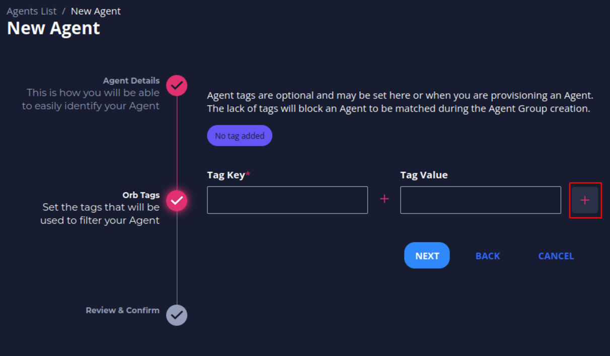
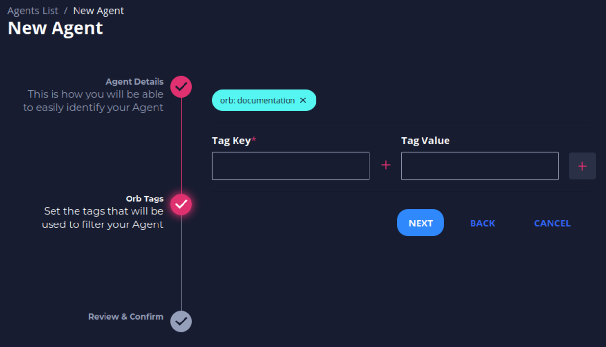
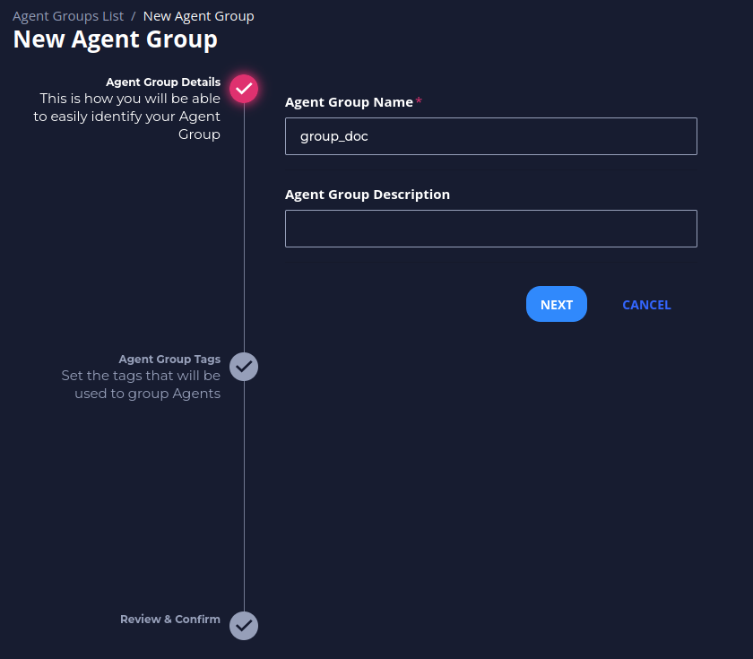
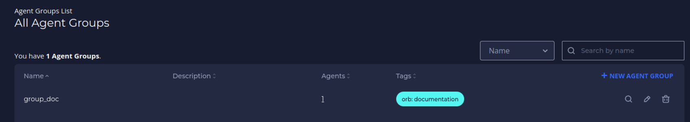
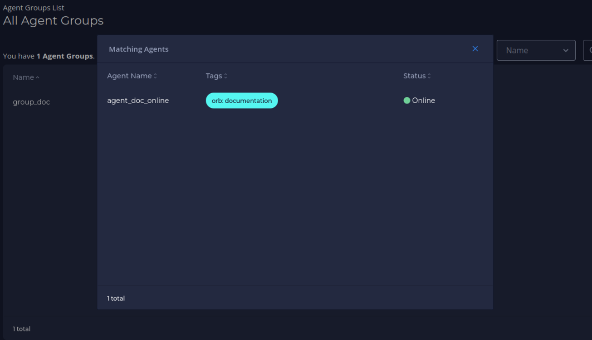

Documentation¶
Getting started¶
Follow the steps below after logging in to your Orb Portal to get an agent up and running.
Register a new account¶
After registering, you should see the home page with a welcome message.
Create an Agent¶
You create an agent for each node you want to monitor. Agents are organized by tags. Each agent has a set of corresponding credentials used during provisioning. You may also provision agents directly at the edge instead of through the UI.
-
Navigate to Agents, and then click New Agent.
-
Fill in an Agent Name and click Next.
-
Optionally, fill in Key and Value tags, then click the + on the right side of the menu. These tags represent the way you will assign the agent to an agent group. Reasonable tags might be "location", "region", "pop", "type", etc. 
-
You should see an icon with your key and value tags appear above the Key and Value textboxes. Click Next. 
-
Click Save to confirm your agent’s name and tags.

-
Your agent credentials should appear. Copy the Provisioning Command. This command contains all the information you need to run the Docker container with the given credentials you now have for the agent.
-
Paste the Provisioning Command into your terminal (optionally edit "mock" to be real) and run the command. See Running Orb Agent for more details.
-
Close out of the Agent Credentials menu. Refresh the Agents List in UI. The agent you just created should display an Online status.
-
Optionally, click the agent's name to view the Agent View screen. This screen will contain more information as you add the agent to an agent group and add corresponding policies and datasets.
Create an Agent Group¶
Agents are organized into agent groups based on key-value tag matching.
-
Navigate to Agent Groups, and then click New Agent Group.

-
Fill in an Agent Group Name and click Next. 
-
Fill in the Key and Value tags, which need to match the tags of the corresponding Agent, and click the + on the right side of the menu. You should see an icon with your key and value tags appear above the Key and Value textboxes.
-
Click Next. You should see a message about the number of agents matching. Then click Save.
 üí° By clicking in EXPAND you can see the agents that are matching with the group (This is optional).
üí° By clicking in EXPAND you can see the agents that are matching with the group (This is optional).
-
View the newly created group in the Agent Groups list. 
-
Click the number in the Agents column to view the matching agents. 
Create a Sink¶
A sink is a location to send the metrics collected from the agents. The current version supports Prometheus, and future versions will support more options. You can use a private Prometheus instance or use a free Grafana Cloud account as a sink.
-
Navigate to Sink Management, and then click New Sink.

-
Fill in a sink name and click Next.
-
Fill in your sink destination details. This includes the host/username/password from your Prometheus
remote_writeconfiguration. -
Optionally, add sink tags by filling in the Key and Value fields. Click + after each key-value pair, and then click Next.
-
Review and confirm your sink details and click Save.
-
View your newly created sink in the All Sinks list.
Create a Policy¶
Policies tell agents which metrics to collect and how to collect them.
-
Navigate to Policy Management, and then click New Policy.

-
Fill in a policy name and (optionally) a description. The policy name needs to be unique and cannot contain spaces (use underscores or dashes instead). Then click Next.
-
Select the Tap (input stream) to analyze. In this example, we use “default_pcap” which is the default for Packet Capture. All other options are advanced and can be left as is. Click Next.
-
Click Add Handler to add a Stream Handler to the policy, which specifies how to analyze the input stream selected in the previous step.
-
Add a Handler Label for each handler you add. In this example, we want to analyze DNS traffic, so we select the “dns” handler. The only required field here is the Handler Label, which is automatically generated for you (handler_dns_1 in this case).
-
Enter any customization variables. In this example, we customize the analysis by analyzing only domain names ending in ".ua" or ".ru". This is done with the filter labeled "Include Only QNames With Suffix." We input a comma delimited list of suffixes, so enter ".ua,.ru". Click Save after entering any customization to save this Handler.
-
You should see your new handler label on the screen. Optionally, add more handlers. Click Save to save the policy.
Create a Dataset¶
Datasets essentially connect all of the previous pieces. By creating and defining a dataset, you send a specific policy to a specific agent group and establish a sink to receive the resulting metrics which allows you to visualize and action on the data.
-
Navigate to the Policy you would like to create a Dataset for, then click on New Dataset.
-
Select the Agent Group to send the policy to, the Sink(s) you would like to send the resulting metrics to, and give the Dataset a name.
-
As soon as you click Save, the policy will be sent in real time to the Agents in the Agent Group and begin running.
-
Verify your dataset is active via the Agent View screen. Navigate to Agents and click on the name of the agent that matches the group you selected in creating the dataset. The Agent View screen displays. Under the Active Policies/Datasets category, click the Policy drop-down (which should accompany a "running" status), and your Dataset should display.
Check Orb Health¶
Orb objects have status variables whose functions are to help you understand the health of your system. Below is a guide to the correct interpretations of each status.
Agent Status¶
There are 4 expected status for agents: new, online, offline and stale

These status are related to the agent's last activity (heartbeat):
üü£ new means that the agent never sent a heartbeat (i.e. has never connected to the control plane)
üü¢ online means that the agent is sending heartbeats right now (is running and healthy).
⚪ offline means that the control plane received a heartbeat saying that the agent is going offline.
üü† stale means that the control plane has not received a heartbeat for 5 minutes (without having received a heartbeat stating that it would go offline)
Policies Status¶
The status of each policy can be seen on the preview page of an agent to which it is applied
The policy will be:
running if agent policy is being managed from the control plane (policy-related metrics are being requested/scraped by this agent)
failed_to_apply if an error prevents the policy from being applied by the agent. By clicking on the expand icon you can see the cause of the error
offline if the policy was stopped by agent request
Datasets Validity¶
Once created a dataset can only be valid (üü¢) or invalid (üî¥)
The dataset will always be valid as long as the policy, the group AND the sink linked to it exist in Orb. If the policy, the group OR the sink is removed from Orb, the dataset will become invalid. Note, in the image above, that the invalid dataset does not contain the group listed, as it has been removed from the Orb.
Sinks Status¶
üü† Unknown - No metrics have ever been published to this sink
üü¢ Active - Metrics are actively being published to this sink
⚪ Idle - The last metrics published to this sink were more than 5 minutes ago
üî¥ Error - The sink tried to publish the metrics but failed. Attention: In this case, check that the sink credentials are configured correctly.
Visualize and alert on your metrics¶
- Your agent should now be running the policy you created. After one minute of collection time, the metrics will be sent to your Prometheus sink.
- You may use standard tools for visualizing and alerting on your Prometheus metrics. A popular option is Grafana.
- A pre-made dashboard for visualizing Orb/pktvisor metrics is available for import here.

Running Orb Agent¶
An Orb agent needs to run on all the infrastructure (computers, servers, switches, VMs, k8s, etc.) to be monitored. It is a small, lightweight Docker process with an embedded pktvisor agent which connects into the Orb control plane to receive policies and send its metric output.
To run an agent, you will need:
- Docker, to run the agent image (ns1labs/orb-agent:develop)
- Agent Credentials, which are provided to you by the Orb UI or REST API after creating an agent
- The Orb Control Plane host address (e.g.
localhostororb.live) - The network interface to monitor (e.g.
eth0)
Tip
If you are unsure which network interface to monitor, you may list the available interfaces on your host. Note that to allow
the agent access to these interfaces, you must run the container with --net=host
ip -stats -color -human addr
ifconfig
Agent credentials¶
The agent credentials include three pieces of information, each of which is a UUID in the form 5dc34ded-6a53-44c0-8d15-7e9c8c95391a.
- Agent ID, which uniquely identifies the agent.
- Agent Channel ID, which uniquely identifies the agent's communication channel.
- Agent Key, which is a private access token for the agent. Note you will only be shown the key once upon creation!
Sample provisioning commands¶
Example
Use this command as a template by substituting in the appropriate values:
docker run -d --net=host
-e ORB_CLOUD_ADDRESS=<HOST>
-e ORB_CLOUD_MQTT_ID=<AGENTID>
-e ORB_CLOUD_MQTT_CHANNEL_ID=<CHANNELID>
-e ORB_CLOUD_MQTT_KEY=<AGENTKEY>
-e PKTVISOR_PCAP_IFACE_DEFAULT=mock
ns1labs/orb-agent:develop
This command is useful for connecting to a local develop environment, perhaps running on Docker compose. Note that the "mock" interface will generate random traffic rather than observe real traffic.
docker run -d --net=host
-e ORB_CLOUD_ADDRESS=localhost
-e ORB_CLOUD_MQTT_ID=7fb96f61-5de1-4f56-99d6-4eb8b43f8bad
-e ORB_CLOUD_MQTT_CHANNEL_ID=3e60e85d-4414-44d9-b564-0c1874898a4d
-e ORB_CLOUD_MQTT_KEY=44e42d90-aaef-45de-9bc2-2b2581eb30b3
-e PKTVISOR_PCAP_IFACE_DEFAULT=mock
-e ORB_TLS_VERIFY=false
ns1labs/orb-agent:develop
This command is similar to one you would use on the orb.live SaaS platform
docker run -d --net=host
-e ORB_CLOUD_ADDRESS=orb.live
-e ORB_CLOUD_MQTT_ID=7fb96f61-5de1-4f56-99d6-4eb8b43f8bad
-e ORB_CLOUD_MQTT_CHANNEL_ID=3e60e85d-4414-44d9-b564-0c1874898a4d
-e ORB_CLOUD_MQTT_KEY=44e42d90-aaef-45de-9bc2-2b2581eb30b3
-e PKTVISOR_PCAP_IFACE_DEFAULT=eth0
ns1labs/orb-agent:develop
docker run -d --net=host
-e ORB_CLOUD_ADDRESS=orb.live
-e ORB_CLOUD_MQTT_ID=7fb96f61-5de1-4f56-99d6-4eb8b43f8bad
-e ORB_CLOUD_MQTT_CHANNEL_ID=3e60e85d-4414-44d9-b564-0c1874898a4d
-e ORB_CLOUD_MQTT_KEY=44e42d90-aaef-45de-9bc2-2b2581eb30b3
-e PKTVISOR_PCAP_IFACE_DEFAULT=eth0
-e ORB_BACKENDS_PKTVISOR_API_PORT=10854
ns1labs/orb-agent:develop
docker run -d --net=host
-e ORB_CLOUD_ADDRESS=orb.live
-e ORB_CLOUD_MQTT_ID=7fb96f61-5de1-4f56-99d6-4eb8b43f8bad
-e ORB_CLOUD_MQTT_CHANNEL_ID=3e60e85d-4414-44d9-b564-0c1874898a4d
-e ORB_CLOUD_MQTT_KEY=44e42d90-aaef-45de-9bc2-2b2581eb30b3
-e PKTVISOR_PCAP_IFACE_DEFAULT=eth0
ns1labs/orb-agent:develop run -d
Question
Is the agent Docker image not starting correctly? Do you have a specific use case? Have you found a bug? Come talk to us live on Slack, or file a GitHub issue here.
Configuration files¶
Most configuration options can be passed to the container as environment variables, but there are some situations that require a configuration file.
You will need to use a configuration file if:
- You want to assign tags to the agent at the edge
- You want to setup custom pktvisor Taps
- You want the agent to auto-provision
The configuration file is written in YAML. You can use the latest template configuration file as a starting point, or start here:
version: "1.0"
# this section is used by pktvisor
# see https://github.com/ns1labs/pktvisor/blob/develop/RFCs/2021-04-16-75-taps.md
visor:
taps:
default_pcap:
input_type: pcap
config:
iface: "eth0"
host_spec: "192.168.0.54/32,192.168.0.55/32,127.0.0.1/32"
# this section is used orb-agent
# most sections and keys are optional
orb:
# these are arbitrary key value pairs used for organization in the control plane and UI
tags:
region: EU
pop: ams02
node_type: dns
cloud:
config:
# optionally specify an agent name to use during auto provisioning
# hostname will be used if it's not specified here
agent_name: my-agent1
auto_provision: true
api:
address: https://orb.live
# if auto provisioning, specify API token here (or pass on the command line)
token: TOKEN
mqtt:
address: tls://orb.live:8883
# if not auto provisioning, specify agent connection details here
id: "AGENT_UUID"
key: "AGENT_KEY_UUID"
channel_id: "AGENT_CHANNEL_UUID"
backends:
pktvisor:
binary: "/usr/local/sbin/pktvisord"
# this example assumes the file is saved as agent.yaml. If your file has another name, you must replace it with the proper name
config_file: "/usr/local/orb/etc/agent.yaml"
You must mount your configuration file into the orb-agent container. For example, if your configuration file
is on the host at /local/orb/agent.yaml, you can mount it into the container with this command:
docker run -v /local/orb:/usr/local/orb/ --net=host \
ns1labs/orb-agent:develop run -c /usr/local/orb/agent.yaml
Advanced auto-provisioning setup¶
Some use cases require a way to provision agents directly on edge infrastructure without creating an agent manually in the UI or REST API ahead of time. To do so, you will need to create an API key which can be used by orb-agent to provision itself.
Warning
Auto-provisioning is an advanced use case. Most users will find creating an agent in the UI easier.
-
If you have not already done so, register a new account with an email address and password at https://HOST/auth/register.
-
Create a
SESSION_TOKENwith theEMAIL_ADDRESSandPASSWORDfrom registration:curl --location --request POST 'https://HOST/api/v1/tokens' \ --header 'Content-Type: application/json' \ --data-raw '{ "email": "<EMAIL_ADDRESS>", "password": "<PASSWORD>" }' -
The output from creating a session token looks like this:
{ "token": "SESSION_TOKEN" } -
Because session tokens expire after 24 hours, you can create a permanent API token for agent provisioning by using the
SESSION_TOKENabove:curl --location --request POST 'https://HOST/api/v1/keys' \ --header 'Authorization: <SESSION_TOKEN>' \ --header 'Content-Type: application/json' \ --data-raw '{ "type": 2 }' -
The output from creating a
PERMANENT_TOKENlooks like the following. Please take note of theid(used later to revoke) and thevalue(the permanent API token):{ "id": "710c6a92-b463-42ec-bf24-8ae24eb13081", "value": "PERMANENT_TOKEN", "issued_at": "2021-09-07T15:29:49.70146088Z" } -
Currently, the permanent token allows access to all API functionality, not just provisioning. You can revoke this permanent token at any time with the following call, using the
idfield above:curl --location --request DELETE 'HOST:80/api/v1/keys/<PERMANENT_TOKEN_ID>' \ --header 'Authorization: <SESSION_TOKEN>' -
Create a config for Orb and pktvisor taps, for example,
/local/orb/agent.yaml:version: "1.0" visor: taps: ethernet: input_type: pcap config: iface: "eth0" orb: db: file: /usr/local/orb/orb-agent.db tags: region: EU pop: ams02 node_type: dns cloud: config: agent_name: myagent1 api: address: https://HOST mqtt: address: tls://HOST:8883 -
You can now pull and run
ns1labs/orb-agent:developto auto-provision, substituting in thePERMANENT_TOKENand optionally configuring agent name and Orb tags. If you don't set the agent name, it will attempt to use a hostname. You must mount the directory to save the agent state database and the config file:
docker pull ns1labs/orb-agent:develop
docker run -v /local/orb:/usr/local/orb/ --net=host \
-e ORB_CLOUD_API_TOKEN=<PERMANENT_TOKEN> \
ns1labs/orb-agent:develop run -c /usr/local/orb/agent.yaml
Working with API Docs¶
Follow the links below for API documentation of each respective Orb microservice: